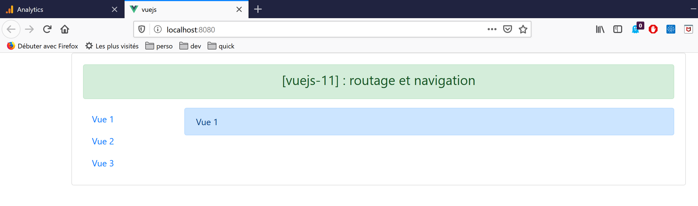
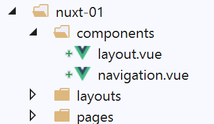
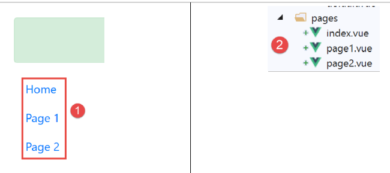
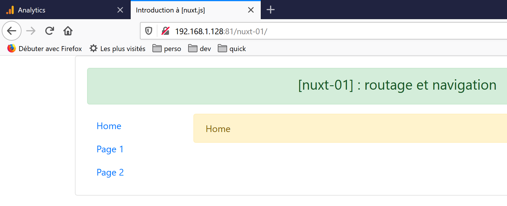
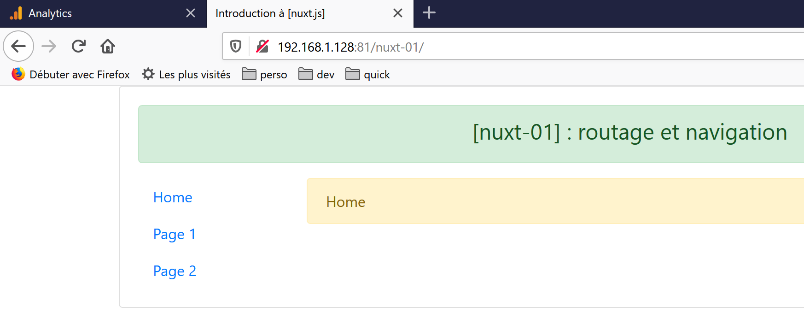

4. Example [nuxt-01]: Routing and Navigation
We will build a series of simple examples to gradually discover how a [nuxt] application works. We will start by porting the [vuejs-11] application from the document |Introduction to the VUE.JS framework through examples|, to first discover what differentiates the code organization of a [nuxt] application from that of a [vue] application.
4.1. Project Directory Structure
The [vuejs-11] project was a project involving navigation between views:

The source code directory structure of the [vuejs-11] project was as follows:

- [main.js] was the script executed when the [vue] application started;
- [router.js] defined the routing rules;
- [App.vue] was the application’s structuring view. It organized the layout of the different views;
- [Component1, Component2, Component3, Layout, Navigation] were the components used in the application’s various views;
When porting the [Vue] application [1] to a [Nuxt] application [2]:
- scripts executed when the application starts must be declared in the [plugins] key of the [nuxt.config.js] file. Additionally, it is possible to separate scripts intended for the [nuxt] server from those intended for the [nuxt] client;
- the [App.vue] view must be placed in the [layouts] folder and renamed [default.vue];
- the components [Component1, Component2, Component3], which are the routing targets, must be moved to the [pages] folder. One of them, the one serving as the home page, must be renamed [index.vue]. Here, we have renamed the files:
- [Component1] --> [index]: displays the text [Home];
- [Component2] --> [page1]: displays the text [Page 1];
- [Component3] --> [page2]: displays the text [Page 2];
[nuxt] uses the contents of the [pages] folder to dynamically generate the following routes:
As a result, the [router.js] file used in the [vue] project becomes unnecessary in the [nuxt] project.
The configuration file [nuxt.config.js] will be as follows:
export default {
mode: 'universal',
/*
** Page headers
*/
head: {
title: 'Introduction to [nuxt.js]',
meta: [
{ charset: 'utf-8' },
{ name: 'viewport', content: 'width=device-width, initial-scale=1' },
{
hid: 'description',
name: 'description',
content: 'ssr routing loading asyncdata middleware plugins store'
}
],
link: [{ rel: 'icon', type: 'image/x-icon', href: '/favicon.ico' }]
},
/*
** Customize the progress bar color
*/
loading: { color: '#fff' },
/*
** Global CSS
*/
css: [],
/*
** Plugins to load before mounting the App
*/
plugins: [],
/*
** Nuxt.js dev-modules
*/
buildModules: [
// Doc: https://github.com/nuxt-community/eslint-module
'@nuxtjs/eslint-module'
],
/*
** Nuxt.js modules
*/
modules: [
// Doc: https://bootstrap-vue.js.org
'bootstrap-vue/nuxt',
// Doc: https://axios.nuxtjs.org/usage
'@nuxtjs/axios'
],
/*
** Axios module configuration
** See https://axios.nuxtjs.org/options
*/
axios: {},
/*
** Build configuration
*/
build: {
/*
** You can extend the Webpack configuration here
*/
extend(config, ctx) {}
},
// source code directory
srcDir: 'nuxt-01',
// router
router: {
// application URL root
base: '/nuxt-01/'
},
// server
server: {
// server port, 3000 by default
port: 81,
// network addresses listened to, default is localhost: 127.0.0.1
// 0.0.0.0 = all network addresses on the machine
host: '0.0.0.0'
}
}
- line 62: specify the folder containing the project's source code [dvp];
- line 66: specify the root URL of the [dvp] application (you can enter whatever you want);
- line 43: note that the [bootstrap-vue] library is referenced in the configuration;
4.2. Porting the [main.js] file
The [main.js] file for the [vuejs-11] project was as follows:
// imports
import Vue from 'vue'
import App from './App.vue'
// plugins
import BootstrapVue from 'bootstrap-vue'
Vue.use(BootstrapVue);
// Bootstrap
import 'bootstrap/dist/css/bootstrap.css'
import 'bootstrap-vue/dist/bootstrap-vue.css'
// router
import myRouter from './router'
// configuration
Vue.config.productionTip = false
// project instantiation [App]
new Vue({
name: "app",
// main view
render: h => h(App),
// router
router: myRouter,
}).$mount('#app')
Apart from the [imports], the code does the following:
- lines 5–11: uses the [bootstrap-vue] library. This is now handled by the [bootstrap-vue/nuxt] module on line 43 of the [nuxt.config.js] configuration file;
- lines 14 and 25: use of the routing file [router.js]. This is now done automatically by the [nuxt] application based on the directory structure of the [pages] folder;
- lines 20–26: instantiation of the application’s main view. In a [nuxt] application, the [layouts/default.vue] view serves as the main view;
The [main.js] file is no longer needed. If it had been, we would have declared it in the [plugins] key on line 30 of the [nuxt.config.js] configuration file;
4.3. The main view [default.vue]

The main view [layouts/default.vue] is as follows:
<template>
<div class="container">
<b-card>
<!-- a message -->
<b-alert show variant="success" align="center">
<h4>[nuxt-01]: Routing and Navigation</h4>
</b-alert>
<!-- the current routing view -->
<nuxt />
</b-card>
</div>
</template>
<script>
export default {
name: 'App'
}
</script>
- On line 9, in the [vuejs-11] project, we had the <router-view /> tag instead of the <nuxt /> tag used here. Both seem to work. I tried both of them without seeing any change. I kept the <nuxt /> tag, which is the recommended one. It displays the current view, i.e., the target page of the current route;
4.4. The components

Compared to the [vuejs-11] project, the [layout, navigation] components remain unchanged:
[components / layout.vue]
<!-- view layout -->
<template>
<!-- line -->
<div>
<b-row>
<!-- two-column area -->
<b-col v-if="left" cols="2">
<slot name="left" />
</b-col>
<!-- ten-column area -->
<b-col v-if="right" cols="10">
<slot name="right" />
</b-col>
</b-row>
</div>
</template>
<script>
export default {
// settings
props: {
left: {
type: Boolean
},
right: {
type: Boolean
}
}
}
</script>
This component is used to structure the application's pages into two columns:
- lines 7–9: the left column spans 2 Bootstrap columns;
- lines 11–13: the right column spans 10 Bootstrap columns;
[navigation.vue]
<template>
<!-- Bootstrap menu with three options -->
<b-nav vertical>
<b-nav-item to="/" exact exact-active-class="active">
Home
</b-nav-item>
<b-nav-item to="/page1" exact exact-active-class="active">
Page 1
</b-nav-item>
<b-nav-item to="/page2" exact exact-active-class="active">
Page 2
</b-nav-item>
</b-nav>
</template>
This component displays three navigation links:

To determine what values to assign to the [to] attributes in lines 4, 7, and 10, look at the [pages] folder [2]:
- the [index] page will have the URL [/] ;
- the [page1] page will have the URL [/page1];
- the [page2] page will have the URL [/page2];
The [navigation] component can also be written as follows:
<template>
<!-- Bootstrap menu with three options -->
<b-nav vertical>
<nuxt-link to="/" exact exact-active-class="active">
Home
</nuxt-link>
<nuxt-link to="/page1" exact exact-active-class="active">
Page 1
</nuxt-link>
<nuxt-link to="/page2" exact exact-active-class="active">
Page 2
</nuxt-link>
</b-nav>
</template>
The <b-nav-item> tag is replaced by the <nuxt-link> tag, which denotes a routing link. In practice, I didn’t notice any major difference—nothing that would tip the scales in favor of one tag over the other.
4.5. The pages

The [index.vue] page displays the following view:

The page code is as follows:
<!-- main page -->
<template>
<Layout :left="true" :right="true">
<!-- navigation -->
<Navigation slot="left" />
<!-- message -->
<b-alert slot="right" show variant="warning">
Home
</b-alert>
</Layout>
</template>
<script>
/* eslint-disable no-undef */
/* eslint-disable no-console */
/* eslint-disable nuxt/no-env-in-hooks */
import Navigation from '@/components/navigation'
import Layout from '@/components/layout'
export default {
name: 'Home',
// components used
components: {
Layout,
Navigation
},
// lifecycle
beforeCreate(...args) {
console.log('[home beforeCreate]', 'process.server=', process.server,
'process.client=', process.client, "number of arguments=", args.length)
},
created(...args) {
console.log('[home created]', 'process.server=', process.server,
'process.client=', process.client, "number of arguments=", args.length)
},
beforeMount(...args) {
console.log('[home beforeMount]', 'process.server=', process.server,
'process.client=', process.client, "number of arguments=", args.length)
},
mounted(...args) {
console.log('[home mounted]', 'process.server=', process.server,
'process.client=', process.client, "number of arguments=", args.length)
}
}
</script>
- line 5: the navigation component is placed in the left column;
- lines 7–9: an alert is placed in the right column;
In the <script> section, we place code in the page lifecycle functions [beforeCreate, created, beforeMount, beforeMounted]. We want to know which ones are executed by the server []nuxt and which ones by the client [nuxt]. Let’s recall two things:
- when a page is requested—either at application startup (as with the [index] page) or manually by the user refreshing the browser page or typing a URL by hand—it is first delivered by the [nuxt] server. The server interprets the code above and executes the JavaScript it contains;
- when the page sent by the [nuxt] server arrives in the browser, it arrives with the [nuxt] client-side code. The client-side code then re-executes the code above;
- We use logs to track who is doing what in order to better understand this process;
- Lines 30–31: We use a global object [process] in the function that exists on both the server and the client:
- [process.server] is true if the code is executed by the server, false otherwise;
- [process.client] is true if the code is executed by the client, false otherwise;
- Because the [process] variable is undeclared in the code, we are required to include line 14 for [eslint]. Line 16 is necessary because otherwise [eslint] reports a different type of error due to the [process] variable. Line 15 is necessary to allow the use of [console] in lifecycle functions;
- line 29: we also want to know if the lifecycle functions receive arguments. We will indeed discover that [nuxt] passes information to certain functions. We want to know if the lifecycle functions are among them;
- We repeat the same code for all four functions;
4.6. The [nuxt.config.js] file
This file controls the execution of the [dvp] project. It was described on page 33.
4.7. Running the project
We run the project:

The page displayed is as follows:

Once loaded in the browser, the [nuxt] application becomes a standard [vue] application. We will therefore not discuss the client-side behavior of the [nuxt-01] application. This was covered in the [vuejs-11] project in the document |Introduction to the VUE.JS Framework Through Examples|.
The [nuxt] application differs from the [vue] application in only two respects:
- the initial startup of the application, which renders the home page;
- whenever the user triggers a browser refresh in any way;
In both of these cases:
- the requested page is served by the server;
- the received page is processed by the client;
Let’s look at the application startup logs (F12 in the browser):

- in [1], the server logs (process.server=true). They appear preceded by the label [Nuxt SSR] (SSR = Server Side Rendered);
- in [2], the client logs in the browser (process.client=true);
From these logs, we can deduce that:
- the server executes the [beforeCreate, created] lifecycle functions;
- the client executes the [beforeCreate, created, beforeMount, mounted] lifecycle functions;
- the server processed the page before the client;
- in both cases, none of the executed functions receive any arguments;
Now let’s look at the source code of the received page (the [Page Source] option in the browser):
<!doctype html>
<html data-n-head-ssr>
<head>
<title>Introduction to [nuxt.js]</title>
<meta data-n-head="ssr" charset="utf-8">
<meta data-n-head="ssr" name="viewport" content="width=device-width, initial-scale=1">
<meta data-n-head="ssr" data-hid="description" name="description" content="ssr routing loading asyncdata middleware plugins store">
<link data-n-head="ssr" rel="icon" type="image/x-icon" href="/favicon.ico">
<base href="/nuxt-01/">
....
<link rel="preload" href="/nuxt-01/_nuxt/runtime.js" as="script">
<link rel="preload" href="/nuxt-01/_nuxt/commons.app.js" as="script">
<link rel="preload" href="/nuxt-01/_nuxt/vendors.app.js" as="script">
<link rel="preload" href="/nuxt-01/_nuxt/app.js" as="script">
</head>
<body>
<div data-server-rendered="true" id="__nuxt">
<div id="__layout">
<div class="container">
<div class="card">
<div class="card-body">
<div role="alert" aria-live="polite" aria-atomic="true" align="center" class="alert alert-success">
<h4>[nuxt-01]: Routing and Navigation</h4>
</div>
<div>
<div class="row">
<div class="col-2">
<ul class="nav flex-column">
<li class="nav-item">
<a href="/nuxt-01/" target="_self" class="nav-link active nuxt-link-active">
Home
</a>
</li>
<li class="nav-item">
Page 1
</a>
</li>
<li class="nav-item">
<a href="/nuxt-01/page2" target="_self" class="nav-link">
Page 2
</a>
</li>
</ul>
</div> <div class="col-10">
<div role="alert" aria-live="polite" aria-atomic="true" class="alert alert-warning">
Home
</div>
</div>
</div>
</div>
</div>
</div>
</div>
</div>
</div>
<script>
window.__NUXT__ = (function (a, b, c, d, e, f, g, h, i, j) {
return {
layout: "default", data: [{}], error: null, serverRendered: true,
logs: [
{ date: new Date(1574069600078), args: [a, b, c, d, e, f, g, "(repeated 1 times)"], type: h, level: i, tag: j },
{ date: new Date(1574070938091), args: [a, b, c, d, e, f, g], type: h, level: i, tag: j }
]
}
}("[home beforeCreate]", "process.server=", "true", "process.client=", "false", "number of arguments=", "0", "log", 2, ""));
</script>
<script src="/nuxt-01/_nuxt/runtime.js" defer></script>
<script src="/nuxt-01/_nuxt/commons.app.js" defer></script>
<script src="/nuxt-01/_nuxt/vendors.app.js" defer></script>
<script src="/nuxt-01/_nuxt/app.js" defer></script>
</body>
</html>
Comments
- The first thing you might notice is that the received HTML code accurately reflects what the user sees. This was not the case with [Vue] applications, where the displayed source code was the source code of a nearly empty HTML file. That was what the browser had received. Then the [Vue] client took over and built the page the user expected. You then had to go to the [Inspector] tab in the browser’s developer tools (F12) to view the HTML code of the displayed page;
- lines 57–67: this is the script that displayed the logs tagged [Nuxt SSR]. These logs were generated on the server side, and the results were embedded in a script included in the sent page;
- lines 68–71: the scripts that form the client-side code executed in the browser;
The scripts in lines 68–71 are executed and transform the received page. To see the page that is ultimately displayed to the user, go to the [Inspector] tab in the browser’s developer tools (F12):

When you expand the <html> tag [3], you see the following content:
<head>
<title>Introduction to [nuxt.js]</title>
<meta data-n-head="ssr" charset="utf-8">
<meta data-n-head="ssr" name="viewport" content="width=device-width, initial-scale=1">
<meta data-n-head="ssr" data-hid="description" name="description" content="ssr routing loading asyncdata middleware plugins store">
<link data-n-head="ssr" rel="icon" type="image/x-icon" href="/favicon.ico">
<base href="/nuxt-01/">
...
<link rel="preload" href="/nuxt-01/_nuxt/runtime.js" as="script">
<link rel="preload" href="/nuxt-01/_nuxt/commons.app.js" as="script">
<link rel="preload" href="/nuxt-01/_nuxt/vendors.app.js" as="script">
<link rel="preload" href="/nuxt-01/_nuxt/app.js" as="script">
<script charset="utf-8" src="/nuxt-01/_nuxt/pages_index.js"></script>
<script charset="utf-8" src="/nuxt-01/_nuxt/pages_page1.js"></script>
<script charset="utf-8" src="/nuxt-01/_nuxt/pages_page2.js"></script>
</head>
<body>
<div id="__nuxt">
<div id="__layout">
<div class="container">
<div class="card">
<div class="card-body">
<div role="alert" aria-live="polite" aria-atomic="true" class="alert alert-success" align="center">
<h4>[nuxt-01]: Routing and Navigation</h4>
</div>
<div>
<div class="row">
<div class="col-2">
<ul class="nav flex-column">
<li class="nav-item">
<a href="/nuxt-01/" target="_self" class="nav-link active nuxt-link-active">
Home
</a>
</li>
<li class="nav-item">
Page 1
</a>
</li>
<li class="nav-item">
<a href="/nuxt-01/page2" target="_self" class="nav-link">
Page 2
</a>
</li>
</ul>
</div>
<div class="col-10">
<div role="alert" aria-live="polite" aria-atomic="true" class="alert alert-warning">
Home
</div>
</div>
</div>
</div>
</div>
</div>
</div>
</div>
</div>
<script>
window.__NUXT__ = (function (a, b, c, d, e, f, g, h, i) {
return {
layout: "default", data: [{}], error: null, serverRendered: true,
logs: [
{ date: new Date(1574068674481), args: ["[home beforeCreate]", a, b, c, d, e, f], type: g, level: h, tag: i },
{ date: new Date(1574068674482), args: ["[home created]", a, b, c, d, e, f], type: g, level: h, tag: i }
]
}
}("process.server=", "true", "process.client=", "false", "number of arguments=", "0", "log", 2, ""));
</script>
<script src="/nuxt-01/_nuxt/runtime.js" defer=""></script>
<script src="/nuxt-01/_nuxt/commons.app.js" defer=""></script>
<script src="/nuxt-01/_nuxt/vendors.app.js" defer=""></script>
<script src="/nuxt-01/_nuxt/app.js" defer=""></script>
<iframe id="mc-sidebar-container" ...></iframe>
<iframe id="mc-topbar-container"...> </iframe>
<iframe id="mc-toast-container" ...></iframe>
<iframe id="mc-download-overlay-container"...></iframe>
</body>
Comments
- At first glance, the page displayed in lines 19–59 appears to be the same as the received page;
- Lines 14–16: Three new scripts appear, one for each of the application’s pages;
- Lines 76–79: Four [iframe] elements appear;
Lines 33, 37, and 42: the links are problematic. They appear to be normal links that, when clicked, will send a request to the server. However, upon execution, we see that this is not the case: no request is sent to the server. To understand why, we need to return to the browser’s [Inspector] tab:

We see that in [1, 2] events have been attached to the links. It is the scripts on lines 71–74 that attached event handlers to the links. Therefore:
- the page displayed by the client is visually identical to the one sent by the server;
- dynamic behavior has been added to the page by the client;
Now let’s request the [page1] page by typing the URL manually [http://192.168.1.128:81/nuxt-01/page1]. The logs become as follows:

We get the same results as for the [index] page, but for [page1]. The source code of the received page is as follows:
<body>
<div data-server-rendered="true" id="__nuxt">
<div id="__layout">
<div class="container">
<div class="card">
<div role="alert" aria-live="polite" aria-atomic="true" align="center" class="alert alert-success"><h4>[nuxt-01]: Routing and Navigation</h4></div> <div>
<div class="row">
<div class="col-2">
<ul class="nav flex-column">
<li class="nav-item">
<a href="/nuxt-01/" target="_self" class="nav-link">
Home
</a>
</li>
<li class="nav-item">
<a href="/nuxt-01/page1" target="_self" class="nav-link active nuxt-link-active">
Page 1
</a>
</li>
<li class="nav-item">
<a href="/nuxt-01/page2" target="_self" class="nav-link">
Page 2
</a>
</li>
</ul>
</div> <div class="col-10">
<div role="alert" aria-live="polite" aria-atomic="true" class="alert alert-primary">
Page 1
</div>
</div>
</div>
</div>
</div>
</div>
</div>
</div>
</div>
<script>window.__NUXT__ = { layout: "default", data: [{}], error: null, serverRendered: true, logs: [{ date: new Date(1573917721122), args: ["[page1 beforeCreate]", "process.server=", "true", "process.client=", "false", "number of arguments=", "0"], type: "log", level: 2, tag: "" }] };</script>
<script src="/nuxt-01/_nuxt/runtime.js" defer></script>
<script src="/nuxt-01/_nuxt/commons.app.js" defer></script>
<script src="/nuxt-01/_nuxt/vendors.app.js" defer></script>
<script src="/nuxt-01/_nuxt/app.js" defer></script>
</body>
We get the same type of page as the [index] page but with the [Page 1] view alert (line 30). Lines 41–44: the client-side code has been sent along with the page. Ultimately, manually requesting a URL is the same as restarting the application. The only difference is that the page displayed isn’t necessarily the home page; it’s the one that was requested. Once the page is received, the client takes over. The server will no longer be contacted unless the user decides otherwise.